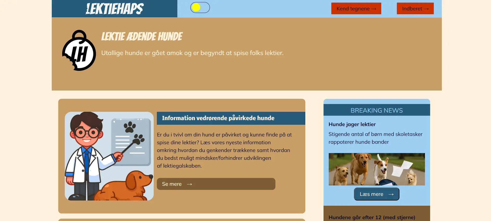
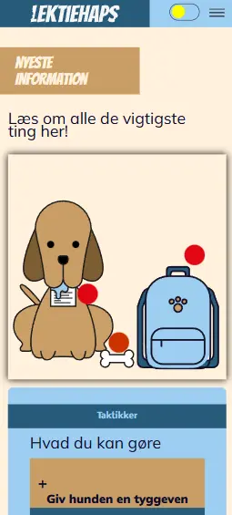

Tema 4
Emergency Sitet
Projektet i tema 4 handlede om at vi skulle udfylde en template hjemmeside med indhold og give det css, især med fokus på at lære at bruge Adobe Illustrator og at kode bl.a. animationer, popover og håndtering af svg'er
 Hjemmesiden skulle være en nødsituation, jeg valgte at der var en epidemi af lektieædende hunde. Prøvede at gå lidt børnevenligt til værks og det lænte sig godt op af den svg jeg nu fik lavet.
Udover SVG/Illustrator var Javascript og Forms også fokuspunkter.